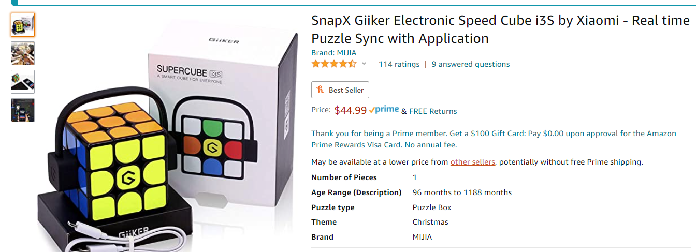
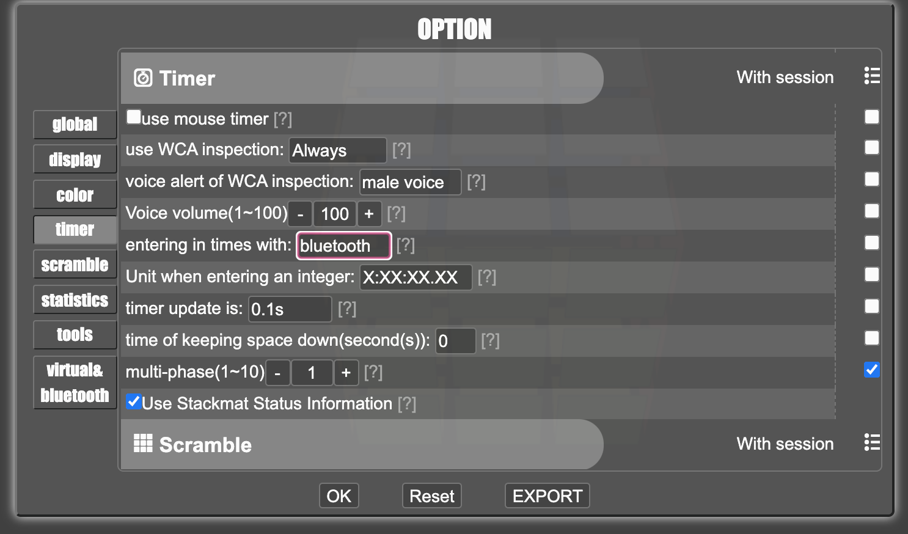
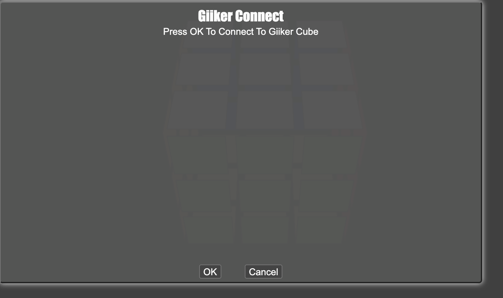
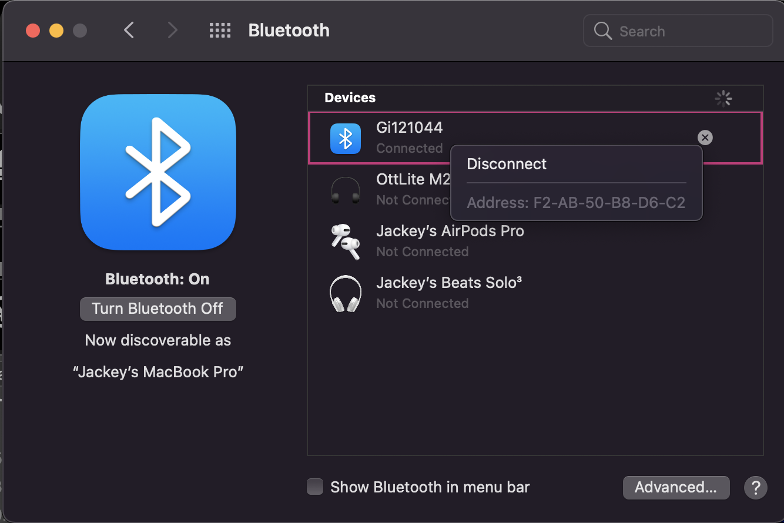
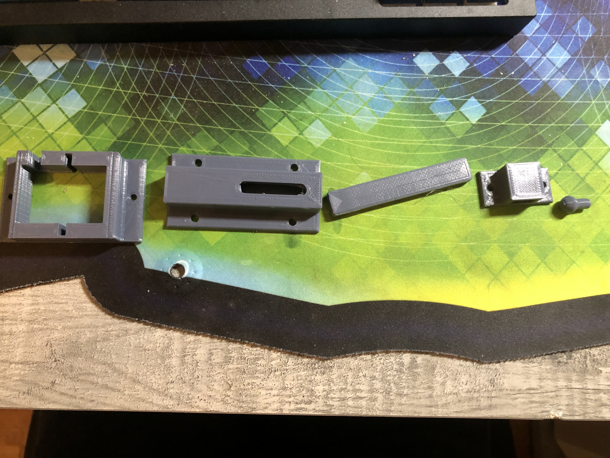
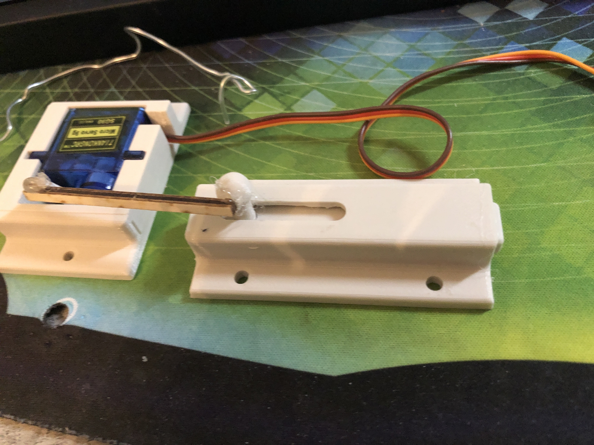
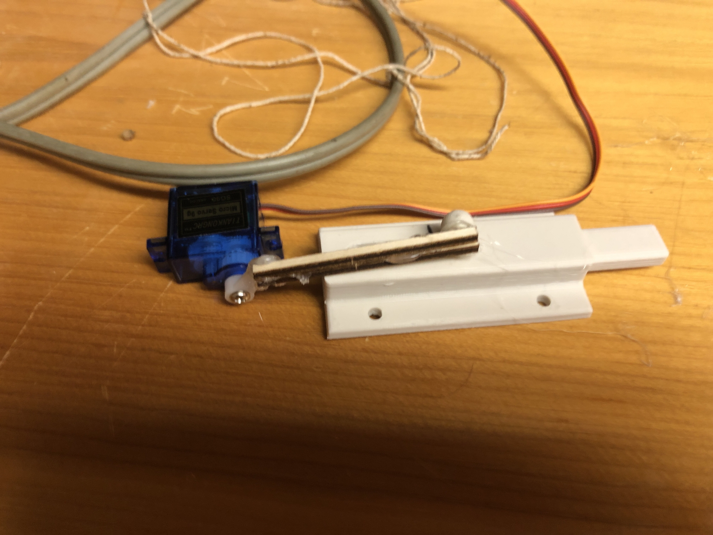
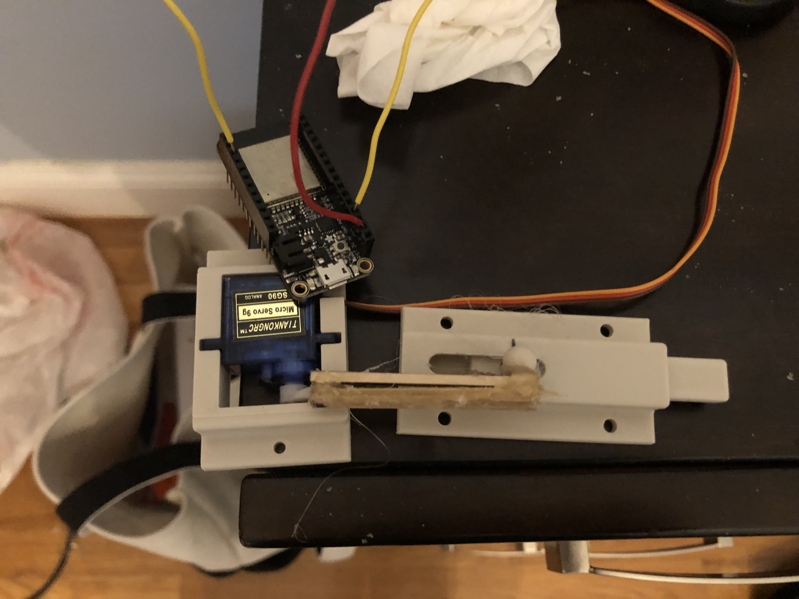
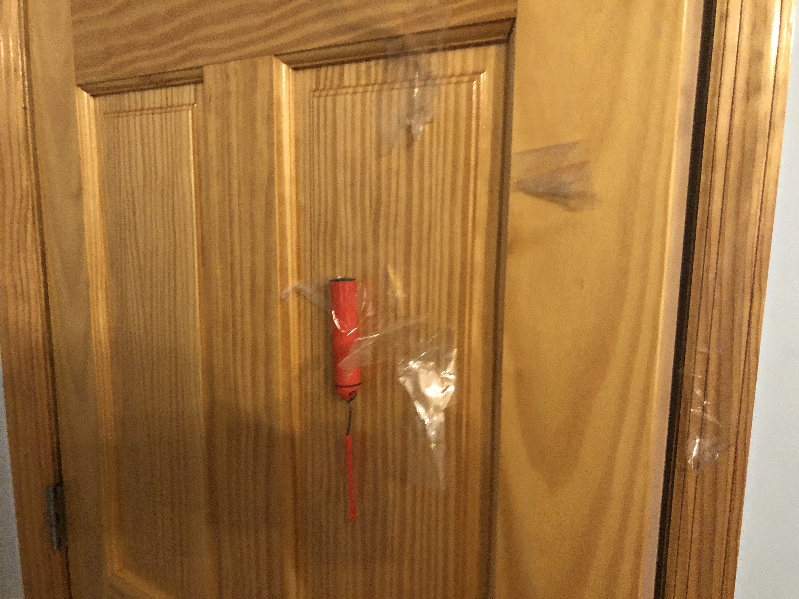

So for my final project proposal, I hope to somehow incorporate the Rubik's cube to my project. A possible idea I have is to have a self-solving Rubik's cube or a bluetooth Rubik's cube. I believe both of these exists but it may be interesting for me to try to build them myself. Another idea I have is a robot that would go and fetch a specific type of Rubik's cube from an input from an app. All seem kind of doable but it would require me to learn a lot of new things.
8/1/21, ok time to put everything together. So I've decided with my skill level in design and electronics, I am not built for this level of work but perhaps another time I can build up to that level, but for now here's the plan. I found a few videos while looking up how to make my own self-solving Rubik's cube. I didn't find a really good way that wouldn't takes months of design and preparation but what I did find was how to "hack" a smart cube(That already exists for sale) with a board that we convinently had. Nice, it seems doable.
In the video, the person explains how he just intercepted the bluetooth signal from the smart cube and then just translated its outputs. He then programmed it so that when the cube reached its solved state, the program would release a magsafe and release a balloon. So I decided to modify that part a little and instead have the Rubik's cube act as somewhat a key for a doorlock.
I went straight to Amazon to buy the cube(I've always wanted a smart cube anyways) and got one for about $40 and got that a few days later
I then proceeded to snoop around YouTube for some "lock" functions that worked with arduino and found one that used some kind of card scanner to unlock the lock. I didn't really need that scanner part but what caught my eyes was that lock mechanism they used. It was a pretty simple mechanism where a servos motor would just rotate moving the lock. Only problem was it needed to be 3D printed. So I went around looking for any friends or nearby services that would offer 3D printing services and so I found some so I should get it in a day or two.
So I got my whole set up ready(except for the 3D printed stuff), so let's try to get the cube linked to the board. The first thing that I needed to find was the MAC address for the cube. This took some guess and checking.
Now I first tried to connect just directly but it didn't seem to appear on my bluetooth devices nearby so I tried to connect it to a website called cstimer.net, which is a very popular timing website among speedcubers. And there was the cube that just magically popped up.
 Then I went back to my list of devices and boom it was there. There I was able to find the MAC address and put it in the code.
Next issue was that I was having trouble having the code upload to my board. There was very frustrating and I just couldn't figure it out. I ended up giving in and just changed my board to the board that the person had in his video and it worked! Not sure why but it did and it finally uploaded. Also it seems that the MAC address needs to be put in with colons in between instead of dashes but that was an easy fix.
And just like that my code is running to tell me what move I just did on the serial monitor, pretty neat.
8/3/21, Next I wanted to change the output of the program when the board detects that the cube is in the solved state. I basically had to learn how to connect the servo motor to my esp32 which is a bit different from the Metro board.
I followed a pretty nice tutorial online but I ran into some issues. Firstly, I tried changing my board back to the Adafruit ESP32 Feather and uploading the code and it worked? So I guess arduino was just having a bad day. The main issues I was having with uploading the motor code was I was not good at coding so I ended up putting pieces of code where they shouldn't have been and declaring things inside of methods instead of doing it outside so it would be seen in the whole program. But after some trial and error, I was able to get it running so I did a pretty basic set up for now making the motor rotate to the 90 degrees and waiting a second to then return to the original position and this worked very well. So now it's time to get the whole thing built together. Also note in the video that the built in LED lights up when the cube is connected which didn't happen before when the board was set to the Node32s and you can hear the motor move when I solved the cube.
So after a few days, I have received my 3D printed parts. I kinda struggled to get these last minute but I got two sets, one from a friend and one from my library so that was pretty nice. I ended up using the one from the library just becasue it seemed to have given me a cleaner print.
When assemebling it, I first tried to see what the unlocked position would be so I could kind of put the little wing thing on how I want it because that will end up being my default position, I can then adjust it however I want it later. However, I would first need to glue on some kind of stick or rod to make the motor actually push the little lock into its lock and unlock positions.
Glueing it seemed to be quiet an issue with me for the wing part of the motor was kinda hard to get a good grip with the glue. I first tried one wooden stick and this proved to be very weak and break only after a few tries. Next, I tried putting two wooden sticks together and seeing if that would help, and it did help for the sphere handle but still not for the plastic wing. Finally, I put another wooden stick on the other side of the wing, making the wing kinda of sandwiched in between. And it seems to be working so yay!
  With the lock assembled with the motor, I can move on to making the program work a bit more with my needs. I needed to make sure that the motor would not over or under shoot. This was basically just me switching and testing values for the servo write where you would write how many degrees r the position of the motor and after I while I finally got it.
Now all is left to do is to mount it on a wall or just tape it because I doubt I want to keep this on my door. The outlet is a bit far so I'm just going to use a battery pack. Update: It didn't work because the door frame was not flat enough and the glue broke again :(
After glueing and drying again, I decided that the door was a bit too risky with the time I had left and also it was just a huge mess to put it on the door because I didn't actually want to screw it in so I tried taping it but I'm just terrible at doing that too. So I then just switched and made my own mini door out of cardboard because I could control the condition of it. I used an exacto knife and boom a mini door. I made sure to allign the components correctly so that it would actually works anddddd...
I glued it again and gave it some time to dry and recorded again...
Thoughts for a v2: At last it has worked but obviously this is not the best this project can be. I hope that if I have time I can possibly make it work out for the curved door frame of my doors. Another major thing is to fix the way I attach the lock with the servo mount. In the video, the person actually screws it to the metal rods but I simply didn't have the same materials in such short notice so it is my fault for giving myself so little time but I'm really glad that I did this and took this class because it really has opened my eyes to a bunch of different ideas with this smart Rubik's cube. Hopefully I can do something even cooler next time with this smart Rubik's cube, maybe one day actually make one for myself. Until then, thanks for reading, all files and code will be below.